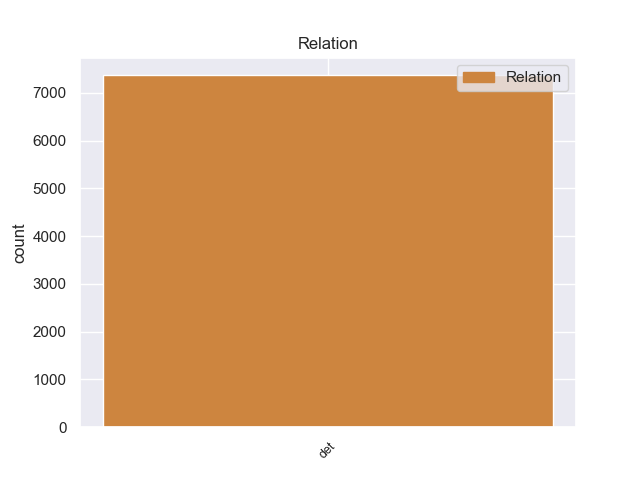
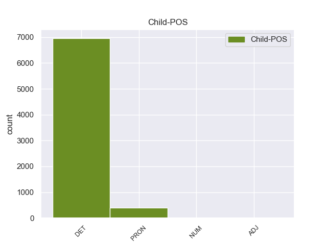

Distribution of features within this leaf



Agreement Rules sorted by frequency.
- When the dependent token is the determiner(det) of the head token, and the head token is NOUN and the dependent token is DET.
1 Αυτό _ _ _ _ 0 _ _ _
2 μπορεί _ _ _ _ 0 _ _ _
3 να _ _ _ _ 0 _ _ _
4 μην _ _ _ _ 0 _ _ _
5 οδηγήσει _ _ _ _ 0 _ _ _
6 σ _ _ _ _ 0 _ _ _
7 τη _ _ _ _ 0 _ _ _
8 λήξη _ _ _ _ 0 _ _ _
9 του _ _ _ _ 0 _ _ _
10 εν _ _ _ _ 0 _ _ _
11 λόγω _ _ _ _ 0 _ _ _
12 ζητήματος _ _ _ _ 0 _ _ _
13 αλλά _ _ _ _ 0 _ _ _
14 , _ _ _ _ 0 _ _ _
15 σ _ _ _ _ 0 _ _ _
16 τη _ _ _ _ 0 _ _ _
17 μορφή _ _ _ _ 0 _ _ _
18 υπό _ _ _ _ 0 _ _ _
19 την _ _ _ _ 0 _ _ _
20 οποία _ _ _ _ 0 _ _ _
21 την _ _ _ _ 0 _ _ _
22 λάβαμε _ _ _ _ 0 _ _ _
23 , _ _ _ _ 0 _ _ _
24 αυτή _ _ _ _ 0 _ _ _
25 η _ _ _ _ 0 _ _ _
26 αίτηση _ _ _ _ 0 _ _ _
27 άρσης _ _ _ _ 0 _ _ _
28 της _ _ _ _ 0 _ _ _
29 ασυλίας _ _ _ _ 0 _ _ _
30 ήταν _ _ _ _ 0 _ _ _
31 , _ _ _ _ 0 _ _ _
32 κατά _ _ _ _ 0 _ _ _
33 την _ _ _ _ 0 _ _ _
34 άποψη _ _ _ _ 0 _ _ _
35 της _ _ _ _ 0 _ _ _
36 Επιτροπής _ _ _ _ 0 _ _ _
37 Νομικών _ _ _ _ 0 _ _ _
38 Θεμάτων _ _ _ _ 0 _ _ _
39 , _ _ _ _ 0 _ _ _
40 απαράδεκτη _ _ _ _ 0 _ _ _
41 , _ _ _ _ 0 _ _ _
42 άποψη _ _ _ _ 0 _ _ _
43 την _ _ _ _ 0 _ _ _
44 οποία _ _ _ _ 0 _ _ _
45 συνιστώ _ _ _ _ 0 _ _ _
46 σ _ _ _ _ 0 _ _ _
47 το ο DET _ Case=Acc|Gender=Neut|Number=Sing 48 det _ _
48 Σώμα σώμα NOUN _ Case=Acc|Gender=Neut|Number=Sing 0 _ _ _
49 να _ _ _ _ 0 _ _ _
50 υιοθετήσει _ _ _ _ 0 _ _ _
51 . _ _ _ _ 0 _ _ _
1 Ο _ _ _ _ 0 _ _ _
2 Εισαγγελέας _ _ _ _ 0 _ _ _
3 σ _ _ _ _ 0 _ _ _
4 τη ο DET _ Case=Acc|Gender=Fem|Number=Sing 5 det _ _
5 Γαλλία Γαλλία PROPN _ Case=Acc|Gender=Fem|Number=Sing 0 _ _ _
6 έχει _ _ _ _ 0 _ _ _
7 το _ _ _ _ 0 _ _ _
8 δικαίωμα _ _ _ _ 0 _ _ _
9 να _ _ _ _ 0 _ _ _
10 εκπληρώνει _ _ _ _ 0 _ _ _
11 τα _ _ _ _ 0 _ _ _
12 καθήκοντά _ _ _ _ 0 _ _ _
13 του _ _ _ _ 0 _ _ _
14 βάσει _ _ _ _ 0 _ _ _
15 του _ _ _ _ 0 _ _ _
16 νόμου _ _ _ _ 0 _ _ _
17 και _ _ _ _ 0 _ _ _
18 το _ _ _ _ 0 _ _ _
19 Σώμα _ _ _ _ 0 _ _ _
20 δεν _ _ _ _ 0 _ _ _
21 λαμβάνει _ _ _ _ 0 _ _ _
22 θέση _ _ _ _ 0 _ _ _
23 σχετικά _ _ _ _ 0 _ _ _
24 με _ _ _ _ 0 _ _ _
25 αυτό _ _ _ _ 0 _ _ _
26 . _ _ _ _ 0 _ _ _
1 Αυτό _ _ _ _ 0 _ _ _
2 μπορεί _ _ _ _ 0 _ _ _
3 να _ _ _ _ 0 _ _ _
4 μην _ _ _ _ 0 _ _ _
5 οδηγήσει _ _ _ _ 0 _ _ _
6 σ _ _ _ _ 0 _ _ _
7 τη _ _ _ _ 0 _ _ _
8 λήξη _ _ _ _ 0 _ _ _
9 του _ _ _ _ 0 _ _ _
10 εν _ _ _ _ 0 _ _ _
11 λόγω _ _ _ _ 0 _ _ _
12 ζητήματος _ _ _ _ 0 _ _ _
13 αλλά _ _ _ _ 0 _ _ _
14 , _ _ _ _ 0 _ _ _
15 σ _ _ _ _ 0 _ _ _
16 τη _ _ _ _ 0 _ _ _
17 μορφή _ _ _ _ 0 _ _ _
18 υπό _ _ _ _ 0 _ _ _
19 την _ _ _ _ 0 _ _ _
20 οποία _ _ _ _ 0 _ _ _
21 την _ _ _ _ 0 _ _ _
22 λάβαμε _ _ _ _ 0 _ _ _
23 , _ _ _ _ 0 _ _ _
24 αυτή αυτός PRON _ Case=Nom|Gender=Fem|Number=Sing|Person=3|PronType=Dem 26 det _ _
25 η _ _ _ _ 0 _ _ _
26 αίτηση αίτηση NOUN _ Case=Nom|Gender=Fem|Number=Sing 0 _ _ _
27 άρσης _ _ _ _ 0 _ _ _
28 της _ _ _ _ 0 _ _ _
29 ασυλίας _ _ _ _ 0 _ _ _
30 ήταν _ _ _ _ 0 _ _ _
31 , _ _ _ _ 0 _ _ _
32 κατά _ _ _ _ 0 _ _ _
33 την _ _ _ _ 0 _ _ _
34 άποψη _ _ _ _ 0 _ _ _
35 της _ _ _ _ 0 _ _ _
36 Επιτροπής _ _ _ _ 0 _ _ _
37 Νομικών _ _ _ _ 0 _ _ _
38 Θεμάτων _ _ _ _ 0 _ _ _
39 , _ _ _ _ 0 _ _ _
40 απαράδεκτη _ _ _ _ 0 _ _ _
41 , _ _ _ _ 0 _ _ _
42 άποψη _ _ _ _ 0 _ _ _
43 την _ _ _ _ 0 _ _ _
44 οποία _ _ _ _ 0 _ _ _
45 συνιστώ _ _ _ _ 0 _ _ _
46 σ _ _ _ _ 0 _ _ _
47 το _ _ _ _ 0 _ _ _
48 Σώμα _ _ _ _ 0 _ _ _
49 να _ _ _ _ 0 _ _ _
50 υιοθετήσει _ _ _ _ 0 _ _ _
51 . _ _ _ _ 0 _ _ _
1 Αυτό _ _ _ _ 0 _ _ _
2 μπορεί _ _ _ _ 0 _ _ _
3 να _ _ _ _ 0 _ _ _
4 μην _ _ _ _ 0 _ _ _
5 οδηγήσει _ _ _ _ 0 _ _ _
6 σ _ _ _ _ 0 _ _ _
7 τη _ _ _ _ 0 _ _ _
8 λήξη _ _ _ _ 0 _ _ _
9 του _ _ _ _ 0 _ _ _
10 εν _ _ _ _ 0 _ _ _
11 λόγω _ _ _ _ 0 _ _ _
12 ζητήματος _ _ _ _ 0 _ _ _
13 αλλά _ _ _ _ 0 _ _ _
14 , _ _ _ _ 0 _ _ _
15 σ _ _ _ _ 0 _ _ _
16 τη _ _ _ _ 0 _ _ _
17 μορφή _ _ _ _ 0 _ _ _
18 υπό _ _ _ _ 0 _ _ _
19 την _ _ _ _ 0 _ _ _
20 οποία _ _ _ _ 0 _ _ _
21 την _ _ _ _ 0 _ _ _
22 λάβαμε _ _ _ _ 0 _ _ _
23 , _ _ _ _ 0 _ _ _
24 αυτή _ _ _ _ 0 _ _ _
25 η _ _ _ _ 0 _ _ _
26 αίτηση _ _ _ _ 0 _ _ _
27 άρσης _ _ _ _ 0 _ _ _
28 της _ _ _ _ 0 _ _ _
29 ασυλίας _ _ _ _ 0 _ _ _
30 ήταν _ _ _ _ 0 _ _ _
31 , _ _ _ _ 0 _ _ _
32 κατά _ _ _ _ 0 _ _ _
33 την _ _ _ _ 0 _ _ _
34 άποψη _ _ _ _ 0 _ _ _
35 της _ _ _ _ 0 _ _ _
36 Επιτροπής _ _ _ _ 0 _ _ _
37 Νομικών _ _ _ _ 0 _ _ _
38 Θεμάτων _ _ _ _ 0 _ _ _
39 , _ _ _ _ 0 _ _ _
40 απαράδεκτη _ _ _ _ 0 _ _ _
41 , _ _ _ _ 0 _ _ _
42 άποψη _ _ _ _ 0 _ _ _
43 την ο DET _ Case=Acc|Definite=Def|Gender=Fem|Number=Sing|PronType=Art 44 det _ _
44 οποία οποίος PRON _ Case=Acc|Gender=Fem|Number=Sing|Person=3|PronType=Rel 0 _ _ _
45 συνιστώ _ _ _ _ 0 _ _ _
46 σ _ _ _ _ 0 _ _ _
47 το _ _ _ _ 0 _ _ _
48 Σώμα _ _ _ _ 0 _ _ _
49 να _ _ _ _ 0 _ _ _
50 υιοθετήσει _ _ _ _ 0 _ _ _
51 . _ _ _ _ 0 _ _ _
1 Είναι _ _ _ _ 0 _ _ _
2 σημαντικό _ _ _ _ 0 _ _ _
3 να _ _ _ _ 0 _ _ _
4 υπογραμμίσω _ _ _ _ 0 _ _ _
5 το _ _ _ _ 0 _ _ _
6 γεγονός _ _ _ _ 0 _ _ _
7 ότι _ _ _ _ 0 _ _ _
8 και _ _ _ _ 0 _ _ _
9 οι _ _ _ _ 0 _ _ _
10 δύο _ _ _ _ 0 _ _ _
11 βουλευτές _ _ _ _ 0 _ _ _
12 διατρανώνουν _ _ _ _ 0 _ _ _
13 σθεναρά _ _ _ _ 0 _ _ _
14 την _ _ _ _ 0 _ _ _
15 αθωότητά _ _ _ _ 0 _ _ _
16 τους _ _ _ _ 0 _ _ _
17 και _ _ _ _ 0 _ _ _
18 καταγγέλλουν _ _ _ _ 0 _ _ _
19 αυτό _ _ _ _ 0 _ _ _
20 που _ _ _ _ 0 _ _ _
21 οι ο DET _ Case=Nom|Definite=Def|Gender=Masc|Number=Plur|PronType=Art 22 det _ _
22 ίδιοι ίδιος ADJ _ Case=Nom|Gender=Masc|Number=Plur 0 _ _ _
23 θεωρούν _ _ _ _ 0 _ _ _
24 καταχρήσεις _ _ _ _ 0 _ _ _
25 σ _ _ _ _ 0 _ _ _
26 τη _ _ _ _ 0 _ _ _
27 διαδικασία _ _ _ _ 0 _ _ _
28 δίωξης _ _ _ _ 0 _ _ _
29 . _ _ _ _ 0 _ _ _
1 Παράλληλα _ _ _ _ 0 _ _ _
2 , _ _ _ _ 0 _ _ _
3 η _ _ _ _ 0 _ _ _
4 Άρσεναλ _ _ _ _ 0 _ _ _
5 νίκησε _ _ _ _ 0 _ _ _
6 την _ _ _ _ 0 _ _ _
7 Μίλαν _ _ _ _ 0 _ _ _
8 με _ _ _ _ 0 _ _ _
9 σκορ _ _ _ _ 0 _ _ _
10 3:0 _ _ _ _ 0 _ _ _
11 , _ _ _ _ 0 _ _ _
12 αλλά _ _ _ _ 0 _ _ _
13 προκρίθηκε _ _ _ _ 0 _ _ _
14 η ο DET _ Case=Nom|Definite=Def|Gender=Fem|Number=Sing|PronType=Art 15 det _ _
15 δεύτερη δεύτερος NUM _ Case=Nom|Gender=Fem|Number=Sing 0 _ _ _
16 . _ _ _ _ 0 _ _ _
1 Ο ο DET _ Case=Nom|Definite=Def|Gender=Masc|Number=Sing|PronType=Art 2 det _ _
2 Μπαράκ Μπαράκ X _ Case=Nom|Gender=Masc|Number=Sing 0 _ _ _
3 Ομπάμα _ _ _ _ 0 _ _ _
4 ανέφερε _ _ _ _ 0 _ _ _
5 ότι _ _ _ _ 0 _ _ _
6 « _ _ _ _ 0 _ _ _
7 ήδη _ _ _ _ 0 _ _ _
8 υπάρχουν _ _ _ _ 0 _ _ _
9 πολλές _ _ _ _ 0 _ _ _
10 αναφορές _ _ _ _ 0 _ _ _
11 για _ _ _ _ 0 _ _ _
12 πόλεμο _ _ _ _ 0 _ _ _
13 με _ _ _ _ 0 _ _ _
14 το _ _ _ _ 0 _ _ _
15 Ιράν _ _ _ _ 0 _ _ _
16 » _ _ _ _ 0 _ _ _
17 και _ _ _ _ 0 _ _ _
18 επεσήμανε _ _ _ _ 0 _ _ _
19 τέτοιες _ _ _ _ 0 _ _ _
20 συζητήσεις _ _ _ _ 0 _ _ _
21 « _ _ _ _ 0 _ _ _
22 είναι _ _ _ _ 0 _ _ _
23 προς _ _ _ _ 0 _ _ _
24 όφελος _ _ _ _ 0 _ _ _
25 της _ _ _ _ 0 _ _ _
26 Τεχεράνης _ _ _ _ 0 _ _ _
27 γιατί _ _ _ _ 0 _ _ _
28 αυξάνουν _ _ _ _ 0 _ _ _
29 τις _ _ _ _ 0 _ _ _
30 τιμές _ _ _ _ 0 _ _ _
31 του _ _ _ _ 0 _ _ _
32 πετρελαίου _ _ _ _ 0 _ _ _
33 , _ _ _ _ 0 _ _ _
34 σ _ _ _ _ 0 _ _ _
35 το _ _ _ _ 0 _ _ _
36 οποίο _ _ _ _ 0 _ _ _
37 βασίζεται _ _ _ _ 0 _ _ _
38 η _ _ _ _ 0 _ _ _
39 Ιρανική _ _ _ _ 0 _ _ _
40 Κυβέρνηση _ _ _ _ 0 _ _ _
41 για _ _ _ _ 0 _ _ _
42 την _ _ _ _ 0 _ _ _
43 χρηματοδότηση _ _ _ _ 0 _ _ _
44 του _ _ _ _ 0 _ _ _
45 πυρηνικού _ _ _ _ 0 _ _ _
46 της _ _ _ _ 0 _ _ _
47 προγράμματος _ _ _ _ 0 _ _ _
48 » _ _ _ _ 0 _ _ _
49 . _ _ _ _ 0 _ _ _
1 Τέλος _ _ _ _ 0 _ _ _
2 , _ _ _ _ 0 _ _ _
3 σχετικά _ _ _ _ 0 _ _ _
4 με _ _ _ _ 0 _ _ _
5 τα _ _ _ _ 0 _ _ _
6 δύο _ _ _ _ 0 _ _ _
7 θέματα _ _ _ _ 0 _ _ _
8 που _ _ _ _ 0 _ _ _
9 δεν _ _ _ _ 0 _ _ _
10 αφορούν _ _ _ _ 0 _ _ _
11 τον _ _ _ _ 0 _ _ _
12 ανταγωνισμό _ _ _ _ 0 _ _ _
13 , _ _ _ _ 0 _ _ _
14 αλλά _ _ _ _ 0 _ _ _
15 έχουν _ _ _ _ 0 _ _ _
16 κάποια κάποιος ADJ _ Case=Acc|Gender=Fem|Number=Sing|Person=3|PronType=Ind 17 det _ _
17 σχέση σχέση NOUN _ Case=Acc|Gender=Fem|Number=Sing 0 _ _ _
18 με _ _ _ _ 0 _ _ _
19 τις _ _ _ _ 0 _ _ _
20 τιμές _ _ _ _ 0 _ _ _
21 , _ _ _ _ 0 _ _ _
22 τη _ _ _ _ 0 _ _ _
23 φορολογία _ _ _ _ 0 _ _ _
24 και _ _ _ _ 0 _ _ _
25 το _ _ _ _ 0 _ _ _
26 ευρώ _ _ _ _ 0 _ _ _
27 , _ _ _ _ 0 _ _ _
28 δεν _ _ _ _ 0 _ _ _
29 θα _ _ _ _ 0 _ _ _
30 επεκταθώ _ _ _ _ 0 _ _ _
31 πέραν _ _ _ _ 0 _ _ _
32 της _ _ _ _ 0 _ _ _
33 απάντησης _ _ _ _ 0 _ _ _
34 που _ _ _ _ 0 _ _ _
35 έδωσα _ _ _ _ 0 _ _ _
36 σχετικά _ _ _ _ 0 _ _ _
37 με _ _ _ _ 0 _ _ _
38 το _ _ _ _ 0 _ _ _
39 ζήτημα _ _ _ _ 0 _ _ _
40 του _ _ _ _ 0 _ _ _
41 ΗΒ _ _ _ _ 0 _ _ _
42 , _ _ _ _ 0 _ _ _
43 τα _ _ _ _ 0 _ _ _
44 αυτοκίνητα _ _ _ _ 0 _ _ _
45 και _ _ _ _ 0 _ _ _
46 το _ _ _ _ 0 _ _ _
47 ευρώ _ _ _ _ 0 _ _ _
48 . _ _ _ _ 0 _ _ _
1 Ωστόσο _ _ _ _ 0 _ _ _
2 , _ _ _ _ 0 _ _ _
3 κάτι κάτις PRON _ Case=Acc|Gender=Neut|Number=Sing|Person=3|PronType=Ind 0 _ _ _
4 τέτοιο τέτοιος PRON _ Case=Acc|Gender=Neut|Number=Sing|Person=3|PronType=Dem 3 det _ _
5 απαιτεί _ _ _ _ 0 _ _ _
6 ξεκάθαρες _ _ _ _ 0 _ _ _
7 ενδείξεις _ _ _ _ 0 _ _ _
8 από _ _ _ _ 0 _ _ _
9 πλευράς _ _ _ _ 0 _ _ _
10 Βόρειας _ _ _ _ 0 _ _ _
11 Κορέας _ _ _ _ 0 _ _ _
12 , _ _ _ _ 0 _ _ _
13 που _ _ _ _ 0 _ _ _
14 μέχρι _ _ _ _ 0 _ _ _
15 τώρα _ _ _ _ 0 _ _ _
16 δεν _ _ _ _ 0 _ _ _
17 έχουν _ _ _ _ 0 _ _ _
18 εμφανιστεί _ _ _ _ 0 _ _ _
19 . _ _ _ _ 0 _ _ _
1 Οι _ _ _ _ 0 _ _ _
2 διαδηλώσεις _ _ _ _ 0 _ _ _
3 διεξήχθησαν _ _ _ _ 0 _ _ _
4 σ _ _ _ _ 0 _ _ _
5 τη _ _ _ _ 0 _ _ _
6 Φαλούτζα _ _ _ _ 0 _ _ _
7 , _ _ _ _ 0 _ _ _
8 εξήντα _ _ _ _ 0 _ _ _
9 χιλιόμετρα _ _ _ _ 0 _ _ _
10 δυτικά _ _ _ _ 0 _ _ _
11 της _ _ _ _ 0 _ _ _
12 Βαγδάτης _ _ _ _ 0 _ _ _
13 , _ _ _ _ 0 _ _ _
14 όταν _ _ _ _ 0 _ _ _
15 οι _ _ _ _ 0 _ _ _
16 διαδηλωτές _ _ _ _ 0 _ _ _
17 , _ _ _ _ 0 _ _ _
18 οι _ _ _ _ 0 _ _ _
19 οποίοι _ _ _ _ 0 _ _ _
20 ανήκουν _ _ _ _ 0 _ _ _
21 σ _ _ _ _ 0 _ _ _
22 τη _ _ _ _ 0 _ _ _
23 μειονότητα _ _ _ _ 0 _ _ _
24 των _ _ _ _ 0 _ _ _
25 Σουνιτών _ _ _ _ 0 _ _ _
26 , _ _ _ _ 0 _ _ _
27 επιτέθηκαν _ _ _ _ 0 _ _ _
28 με _ _ _ _ 0 _ _ _
29 πέτρες _ _ _ _ 0 _ _ _
30 σ _ _ _ _ 0 _ _ _
31 τους _ _ _ _ 0 _ _ _
32 στρατιώτες _ _ _ _ 0 _ _ _
33 , _ _ _ _ 0 _ _ _
34 οι _ _ _ _ 0 _ _ _
35 οποίοι _ _ _ _ 0 _ _ _
36 με _ _ _ _ 0 _ _ _
37 τη _ _ _ _ 0 _ _ _
38 σειρά _ _ _ _ 0 _ _ _
39 τους _ _ _ _ 0 _ _ _
40 άνοιξαν _ _ _ _ 0 _ _ _
41 πυρ _ _ _ _ 0 _ _ _
42 , _ _ _ _ 0 _ _ _
43 με _ _ _ _ 0 _ _ _
44 αποτέλεσμα _ _ _ _ 0 _ _ _
45 πέντε _ _ _ _ 0 _ _ _
46 άτομα _ _ _ _ 0 _ _ _
47 να _ _ _ _ 0 _ _ _
48 χάσουν _ _ _ _ 0 _ _ _
49 τη _ _ _ _ 0 _ _ _
50 ζωή _ _ _ _ 0 _ _ _
51 τους _ _ _ _ 0 _ _ _
52 και _ _ _ _ 0 _ _ _
53 άλλα άλλος PRON _ Case=Acc|Gender=Neut|Number=Plur|Person=3|PronType=Ind 54 det _ _
54 είκοσι είκοσι NUM _ Case=Acc|Gender=Neut|Number=Plur|NumType=Card 0 _ _ _
55 να _ _ _ _ 0 _ _ _
56 τραυματιστούν _ _ _ _ 0 _ _ _
57 . _ _ _ _ 0 _ _ _
1 Συνειδητοποιώ _ _ _ _ 0 _ _ _
2 με _ _ _ _ 0 _ _ _
3 ανακούφιση _ _ _ _ 0 _ _ _
4 ότι _ _ _ _ 0 _ _ _
5 δεν _ _ _ _ 0 _ _ _
6 είμαι _ _ _ _ 0 _ _ _
7 ο _ _ _ _ 0 _ _ _
8 αρμόδιος _ _ _ _ 0 _ _ _
9 Επίτροπος _ _ _ _ 0 _ _ _
10 ούτε _ _ _ _ 0 _ _ _
11 για _ _ _ _ 0 _ _ _
12 τη _ _ _ _ 0 _ _ _
13 φορολογία _ _ _ _ 0 _ _ _
14 ούτε _ _ _ _ 0 _ _ _
15 για _ _ _ _ 0 _ _ _
16 τη _ _ _ _ 0 _ _ _
17 νομισματική _ _ _ _ 0 _ _ _
18 ένωση _ _ _ _ 0 _ _ _
19 , _ _ _ _ 0 _ _ _
20 αλλά _ _ _ _ 0 _ _ _
21 απλά _ _ _ _ 0 _ _ _
22 ο _ _ _ _ 0 _ _ _
23 Επίτροπος _ _ _ _ 0 _ _ _
24 για _ _ _ _ 0 _ _ _
25 την _ _ _ _ 0 _ _ _
26 ταπεινή _ _ _ _ 0 _ _ _
27 πολιτική _ _ _ _ 0 _ _ _
28 ανταγωνισμού _ _ _ _ 0 _ _ _
29 η _ _ _ _ 0 _ _ _
30 οποία _ _ _ _ 0 _ _ _
31 , _ _ _ _ 0 _ _ _
32 παρόλα _ _ _ _ 0 _ _ _
33 ταύτα _ _ _ _ 0 _ _ _
34 , _ _ _ _ 0 _ _ _
35 έχει _ _ _ _ 0 _ _ _
36 να _ _ _ _ 0 _ _ _
37 διαδραματίσει _ _ _ _ 0 _ _ _
38 ένα _ _ _ _ 0 _ _ _
39 ρόλο _ _ _ _ 0 _ _ _
40 και _ _ _ _ 0 _ _ _
41 προσπαθεί _ _ _ _ 0 _ _ _
42 να _ _ _ _ 0 _ _ _
43 τον _ _ _ _ 0 _ _ _
44 διαδραματίσει _ _ _ _ 0 _ _ _
45 δραστήρια _ _ _ _ 0 _ _ _
46 - _ _ _ _ 0 _ _ _
47 με _ _ _ _ 0 _ _ _
48 την _ _ _ _ 0 _ _ _
49 υποστήριξη _ _ _ _ 0 _ _ _
50 του _ _ _ _ 0 _ _ _
51 Κοινοβουλίου _ _ _ _ 0 _ _ _
52 , _ _ _ _ 0 _ _ _
53 η _ _ _ _ 0 _ _ _
54 οποία _ _ _ _ 0 _ _ _
55 είναι _ _ _ _ 0 _ _ _
56 εμφανής _ _ _ _ 0 _ _ _
57 για _ _ _ _ 0 _ _ _
58 μία ένας NUM _ Case=Acc|Definite=Ind|Gender=Fem|Number=Sing|PronType=Art 60 det _ _
59 ακόμη _ _ _ _ 0 _ _ _
60 φορά φορά NOUN _ Case=Acc|Gender=Fem|Number=Sing 0 _ _ _
61 σήμερα _ _ _ _ 0 _ _ _
62 . _ _ _ _ 0 _ _ _
1 Θα _ _ _ _ 0 _ _ _
2 επέτρεπε _ _ _ _ 0 _ _ _
3 σ _ _ _ _ 0 _ _ _
4 τον _ _ _ _ 0 _ _ _
5 κλάδο _ _ _ _ 0 _ _ _
6 να _ _ _ _ 0 _ _ _
7 χρησιμοποιεί _ _ _ _ 0 _ _ _
8 συμφωνίες _ _ _ _ 0 _ _ _
9 διανομής _ _ _ _ 0 _ _ _
10 παρεμφερείς παρεμφερεος ADJ _ Case=Nom|Gender=Fem|Number=Plur 0 _ _ _
11 με _ _ _ _ 0 _ _ _
12 αυτές αυτός PRON _ Case=Acc|Gender=Fem|Number=Plur|Person=3|PronType=Dem 10 det _ _
13 που _ _ _ _ 0 _ _ _
14 επιτρέπονται _ _ _ _ 0 _ _ _
15 σήμερα _ _ _ _ 0 _ _ _
16 , _ _ _ _ 0 _ _ _
17 σχετικά _ _ _ _ 0 _ _ _
18 με _ _ _ _ 0 _ _ _
19 τις _ _ _ _ 0 _ _ _
20 οποίες _ _ _ _ 0 _ _ _
21 η _ _ _ _ 0 _ _ _
22 έκθεση _ _ _ _ 0 _ _ _
23 αξιολόγησής _ _ _ _ 0 _ _ _
24 μας _ _ _ _ 0 _ _ _
25 ήταν _ _ _ _ 0 _ _ _
26 εντελώς _ _ _ _ 0 _ _ _
27 αρνητική _ _ _ _ 0 _ _ _
28 . _ _ _ _ 0 _ _ _
Disagree Examples:
1 Η _ _ _ _ 0 _ _ _
2 σημαντικότητα _ _ _ _ 0 _ _ _
3 του _ _ _ _ 0 _ _ _
4 Αχέροντα _ _ _ _ 0 _ _ _
5 ήταν _ _ _ _ 0 _ _ _
6 μεγάλη _ _ _ _ 0 _ _ _
7 κατά _ _ _ _ 0 _ _ _
8 την _ _ _ _ 0 _ _ _
9 αρχαιότητα _ _ _ _ 0 _ _ _
10 , _ _ _ _ 0 _ _ _
11 οπότε _ _ _ _ 0 _ _ _
12 και _ _ _ _ 0 _ _ _
13 ιδρύθηκε _ _ _ _ 0 _ _ _
14 σ _ _ _ _ 0 _ _ _
15 την _ _ _ _ 0 _ _ _
16 βορειοανατολική _ _ _ _ 0 _ _ _
17 όχθη _ _ _ _ 0 _ _ _
18 της _ _ _ _ 0 _ _ _
19 Αχερουσίας _ _ _ _ 0 _ _ _
20 το _ _ _ _ 0 _ _ _
21 Νεκρομαντείο _ _ _ _ 0 _ _ _
22 , _ _ _ _ 0 _ _ _
23 ο _ _ _ _ 0 _ _ _
24 σημαντικότερος _ _ _ _ 0 _ _ _
25 τόπος _ _ _ _ 0 _ _ _
26 επικοινωνίας _ _ _ _ 0 _ _ _
27 με _ _ _ _ 0 _ _ _
28 τους ο DET DET Case=Acc|Definite=Def|Gender=Masc|Number=Plur|PronType=Art 29 det _ _
29 νεκρούς νεκρός NOUN NOUN Case=Acc|Gender=Masc|Number=Sing 0 _ _ _
30 και _ _ _ _ 0 _ _ _
31 λατρείας _ _ _ _ 0 _ _ _
32 των _ _ _ _ 0 _ _ _
33 θεών _ _ _ _ 0 _ _ _
34 του _ _ _ _ 0 _ _ _
35 Κάτω _ _ _ _ 0 _ _ _
36 Κόσμου _ _ _ _ 0 _ _ _
37 . _ _ _ _ 0 _ _ _
1 Οι _ _ _ _ 0 _ _ _
2 Σουνίτες _ _ _ _ 0 _ _ _
3 διαδηλώνουν _ _ _ _ 0 _ _ _
4 κατά _ _ _ _ 0 _ _ _
5 της _ _ _ _ 0 _ _ _
6 κυβέρνησης _ _ _ _ 0 _ _ _
7 του _ _ _ _ 0 _ _ _
8 Νούρι _ _ _ _ 0 _ _ _
9 αλ _ _ _ _ 0 _ _ _
10 Μάλικι _ _ _ _ 0 _ _ _
11 , _ _ _ _ 0 _ _ _
12 ο _ _ _ _ 0 _ _ _
13 οποίος _ _ _ _ 0 _ _ _
14 ανήκει _ _ _ _ 0 _ _ _
15 σ _ _ _ _ 0 _ _ _
16 την _ _ _ _ 0 _ _ _
17 πλειοψηφία _ _ _ _ 0 _ _ _
18 των ο DET DET Case=Gen|Definite=Def|Gender=Fem|Number=Plur|PronType=Art 19 det _ _
19 Σιίτων Σιίτων PROPN PROPN Case=Nom|Gender=Fem|Number=Sing 0 _ _ _
20 , _ _ _ _ 0 _ _ _
21 ότι _ _ _ _ 0 _ _ _
22 περιθωριοποιεί _ _ _ _ 0 _ _ _
23 τους _ _ _ _ 0 _ _ _
24 ηγέτες _ _ _ _ 0 _ _ _
25 της _ _ _ _ 0 _ _ _
26 σουνιτικής _ _ _ _ 0 _ _ _
27 μειοψηφίας _ _ _ _ 0 _ _ _
28 . _ _ _ _ 0 _ _ _
1 Ένας ένας NUM NUM Case=Nom|Gender=Masc|Number=Sing|NumType=Card 0 _ _ _
2 από _ _ _ _ 0 _ _ _
3 αυτούς αυτός PRON PRON Case=Acc|Gender=Masc|Number=Plur|Person=3|PronType=Dem 1 det _ _
4 είναι _ _ _ _ 0 _ _ _
5 ο _ _ _ _ 0 _ _ _
6 αριθμός _ _ _ _ 0 _ _ _
7 των _ _ _ _ 0 _ _ _
8 βίαιων _ _ _ _ 0 _ _ _
9 επιθέσεων _ _ _ _ 0 _ _ _
10 εναντίον _ _ _ _ 0 _ _ _
11 δημοσιογράφων _ _ _ _ 0 _ _ _
12 , _ _ _ _ 0 _ _ _
13 για _ _ _ _ 0 _ _ _
14 τις _ _ _ _ 0 _ _ _
15 οποίες _ _ _ _ 0 _ _ _
16 ευθύνονται _ _ _ _ 0 _ _ _
17 κυρίως _ _ _ _ 0 _ _ _
18 οπαδοί _ _ _ _ 0 _ _ _
19 της _ _ _ _ 0 _ _ _
20 νεοναζιστικής _ _ _ _ 0 _ _ _
21 οργάνωσης _ _ _ _ 0 _ _ _
22 που _ _ _ _ 0 _ _ _
23 εκπροσωπείται _ _ _ _ 0 _ _ _
24 σ _ _ _ _ 0 _ _ _
25 την _ _ _ _ 0 _ _ _
26 ελληνική _ _ _ _ 0 _ _ _
27 Βουλή _ _ _ _ 0 _ _ _
28 και _ _ _ _ 0 _ _ _
29 ένας _ _ _ _ 0 _ _ _
30 άλλος _ _ _ _ 0 _ _ _
31 λόγος _ _ _ _ 0 _ _ _
32 είναι _ _ _ _ 0 _ _ _
33 το _ _ _ _ 0 _ _ _
34 κλείσιμο _ _ _ _ 0 _ _ _
35 της _ _ _ _ 0 _ _ _
36 ελληνικής _ _ _ _ 0 _ _ _
37 δημόσιας _ _ _ _ 0 _ _ _
38 τηλεόρασης _ _ _ _ 0 _ _ _
39 και _ _ _ _ 0 _ _ _
40 ο _ _ _ _ 0 _ _ _
41 τρόπος _ _ _ _ 0 _ _ _
42 με _ _ _ _ 0 _ _ _
43 τον _ _ _ _ 0 _ _ _
44 οποίο _ _ _ _ 0 _ _ _
45 έγινε _ _ _ _ 0 _ _ _
46 αυτό _ _ _ _ 0 _ _ _
47 " _ _ _ _ 0 _ _ _
48 , _ _ _ _ 0 _ _ _
49 επεσήμανε _ _ _ _ 0 _ _ _
50 η _ _ _ _ 0 _ _ _
51 κ. _ _ _ _ 0 _ _ _
52 Χολγκάντ _ _ _ _ 0 _ _ _
53 . _ _ _ _ 0 _ _ _
1 Τις _ _ _ _ 0 _ _ _
2 καταθέσεις _ _ _ _ 0 _ _ _
3 , _ _ _ _ 0 _ _ _
4 σ _ _ _ _ 0 _ _ _
5 τις _ _ _ _ 0 _ _ _
6 οποίες _ _ _ _ 0 _ _ _
7 δεν _ _ _ _ 0 _ _ _
8 έχει _ _ _ _ 0 _ _ _
9 γίνει _ _ _ _ 0 _ _ _
10 καμία _ _ _ _ 0 _ _ _
11 κίνηση _ _ _ _ 0 _ _ _
12 του _ _ _ _ 0 _ _ _
13 λογαριασμού _ _ _ _ 0 _ _ _
14 για _ _ _ _ 0 _ _ _
15 20 _ _ _ _ 0 _ _ _
16 χρόνια _ _ _ _ 0 _ _ _
17 έχει _ _ _ _ 0 _ _ _
18 βάλει _ _ _ _ 0 _ _ _
19 σ _ _ _ _ 0 _ _ _
20 το _ _ _ _ 0 _ _ _
21 στόχαστρο _ _ _ _ 0 _ _ _
22 το _ _ _ _ 0 _ _ _
23 Υπουργείο _ _ _ _ 0 _ _ _
24 Οικονομικών _ _ _ _ 0 _ _ _
25 , _ _ _ _ 0 _ _ _
26 καθώς _ _ _ _ 0 _ _ _
27 μάλιστα _ _ _ _ 0 _ _ _
28 σύμφωνα _ _ _ _ 0 _ _ _
29 με _ _ _ _ 0 _ _ _
30 εκτιμήσεις _ _ _ _ 0 _ _ _
31 τραπεζικών _ _ _ _ 0 _ _ _
32 στελεχών _ _ _ _ 0 _ _ _
33 φθάνουν _ _ _ _ 0 _ _ _
34 το _ _ _ _ 0 _ _ _
35 ποσό _ _ _ _ 0 _ _ _
36 των ο DET DET Case=Gen|Definite=Def|Gender=Neut|Number=Plur|PronType=Art 39 det _ _
37 3 _ _ _ _ 0 _ _ _
38 δισεκατομμυρίων _ _ _ _ 0 _ _ _
39 ευρώ ευρώ NOUN NOUN Case=Acc|Gender=Neut|Number=Sing 0 _ _ _
40 . _ _ _ _ 0 _ _ _
1 Εκτός _ _ _ _ 0 _ _ _
2 από _ _ _ _ 0 _ _ _
3 την ο DET DET Case=Acc|Definite=Def|Gender=Fem|Number=Sing|PronType=Art 5 det _ _
4 σωρεία _ _ _ _ 0 _ _ _
5 καταχρήσεων κατάχρηση NOUN NOUN Case=Gen|Gender=Fem|Number=Plur 0 _ _ _
6 μεγάλης _ _ _ _ 0 _ _ _
7 κλίμακας _ _ _ _ 0 _ _ _
8 , _ _ _ _ 0 _ _ _
9 διαπράττονται _ _ _ _ 0 _ _ _
10 και _ _ _ _ 0 _ _ _
11 πολλές _ _ _ _ 0 _ _ _
12 καταχρήσεις _ _ _ _ 0 _ _ _
13 σε _ _ _ _ 0 _ _ _
14 μικρή _ _ _ _ 0 _ _ _
15 κλίμακα _ _ _ _ 0 _ _ _
16 , _ _ _ _ 0 _ _ _
17 διότι _ _ _ _ 0 _ _ _
18 ο _ _ _ _ 0 _ _ _
19 τομέας _ _ _ _ 0 _ _ _
20 των _ _ _ _ 0 _ _ _
21 μεταφορών _ _ _ _ 0 _ _ _
22 χαρακτηρίζεται _ _ _ _ 0 _ _ _
23 σε _ _ _ _ 0 _ _ _
24 μεγάλο _ _ _ _ 0 _ _ _
25 βαθμό _ _ _ _ 0 _ _ _
26 από _ _ _ _ 0 _ _ _
27 καταχρήσεις _ _ _ _ 0 _ _ _
28 . _ _ _ _ 0 _ _ _